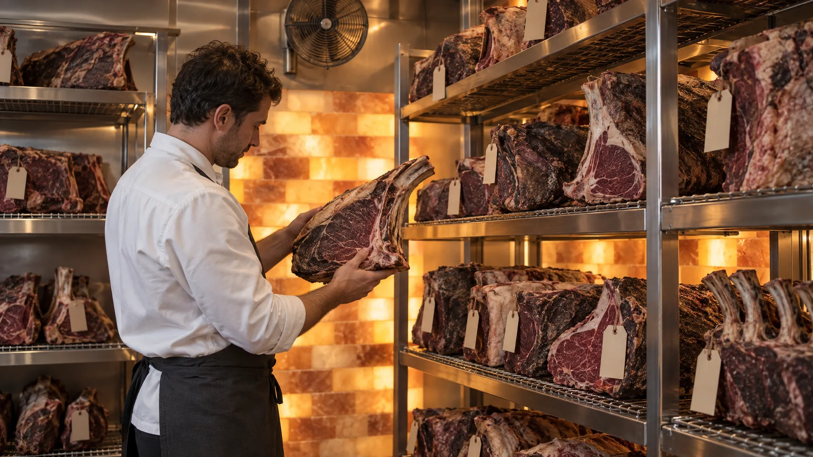
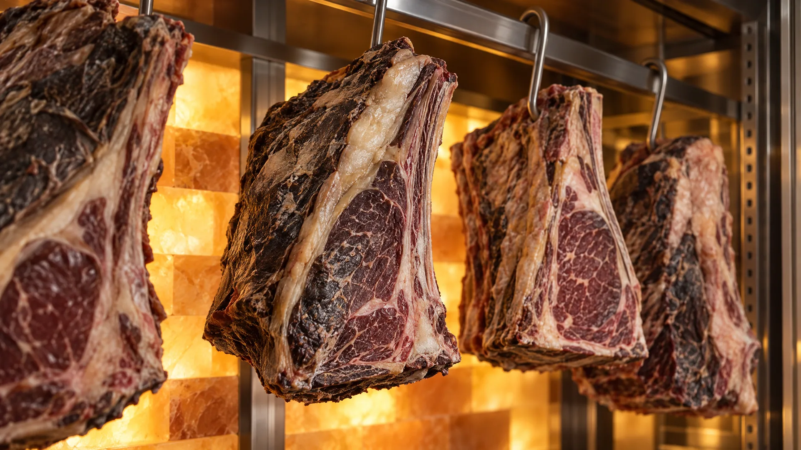

Inside the ageing room
Checked
by hand.
Every rib carries a tag with the day it went in. We read them, one by one.
IN · DAY 01
@xxviii.steakhouse


Every rib carries a tag with the day it went in. We read them, one by one.